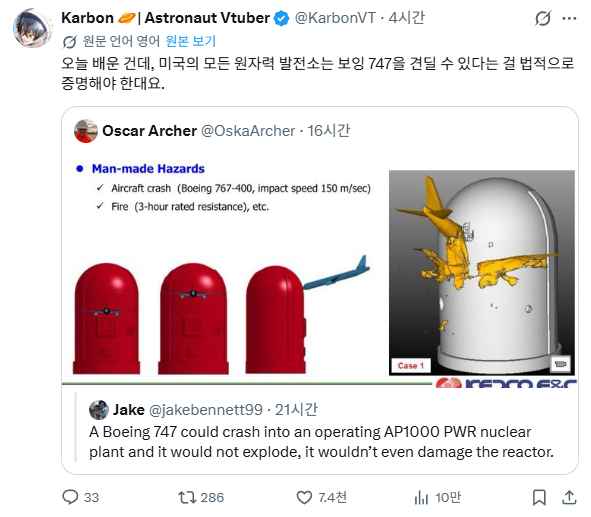

"911"

"911"
한전원자력이네 ㅇㅇ
911 전에는 707이 기준이였는데 강화 덌음
애초에 비행기가 저 정도 접근 할 걸 상정한다면 벙커버스터 정도는 버텨야 하는 거 아니야?
한국이나 미국이나 이미 최우선 국가보안시설이라서, 싸드나 천궁같은 방공자산의 최우선 보호대상이니 굳이 벙커 버스터까지 견디게 설계할 이유가 없음. 지금도 반경 10-20km내외로는 비행도 금지되는 구역인데.
무엇보다 벙커 버스터 공격을 1번이라도 잘 견디게 만드려면, 원전마다 돈이 수조원씩, 한국만 보더라도 100조는 넘게 드는 일인데. 그 예산이면 차라리 방공 포대를 훨씬 촘촘하게 까는 것이 더 이득임.
공격이 최선의 방어라고, 벙커 버스터 공격을 차단할 방공 자산에 투자하는 것이 좋지. 벙커 버스터에 공격당해도 견디는 내구성을 부여하는 것은 비용적으로 너무 비쌈.
그리고 비싼 돈 투자해서 1번 견디는 내구성이 얻어지면, 다음에는 10번 공격당해도 견디는 내구성을 요구할꺼잖아? 처음부터 방공 자산에 투자해서 아예 공격당할 일이 없게 하는 것이 경제적임.
해당 규정 없애기로 했을텐데? 911 이후에 생긴 상징적인 의미는 있지만, 별로 실효성이 없고, 원전 건설 비용만 올라간다고.
이미 1.2m두께의 철근 콘크리트라서 일반 항공기가 추락해도 문제없고. 보잉 747이 최대속도로 충돌해도, 아주 희박한 확률로 특정 각도로 특정 위치에 충돌하는 것이 아니면 문제없는 수준이라서.
"미국 원자력규제위원회(NRC)가 원전 안전의 상징과도 같던 항공기 영향 평가 규정을 오는 2027년 폐지하기로 확정했다. 이번 조치는 원자력 발전 시설에 대한 불필요한 규제 비용을 줄이고 안전 관리 효율성을 높여 차세대 원자로 개발을 촉진하기 위한 조치로 풀이된다."
https://www.esnews.kr/news/articleView.html?idxno=3320
비행기로 한번 박고 시작하나?
발전소 안에서 일하면 핸드폰 터짐?
건물 바깥쪽은 터짐
건물 내부도 보통은 터짐
안터지는 룸이나 통로가 있음(중계기없음)
저 원자력 돔 안은 안터짐
그냥 지대공미사일 설치하는게 더 저렴할지도
오 아랫쪽 로고보니 한국산 원전 디자인인가보네